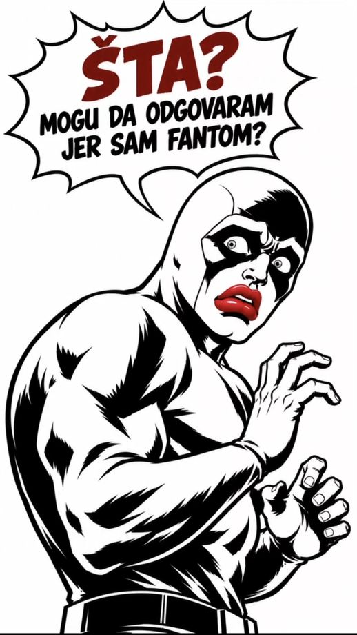
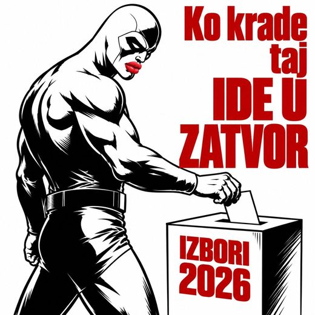
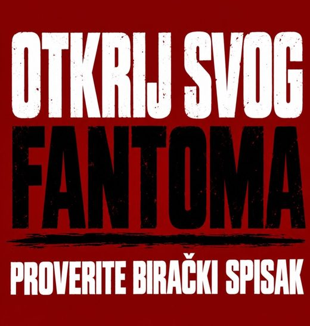
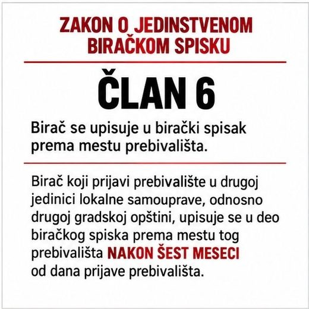
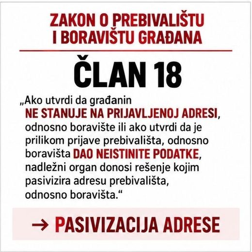
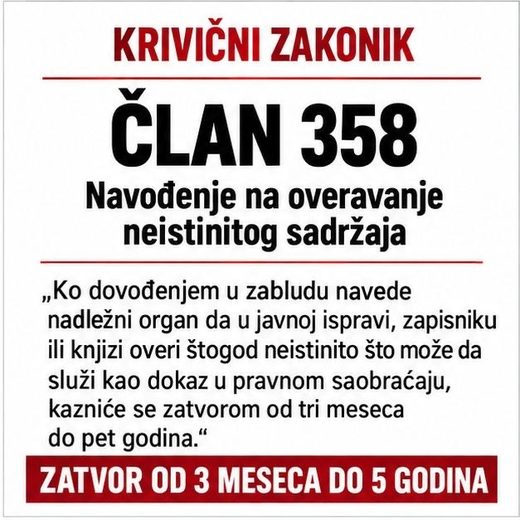
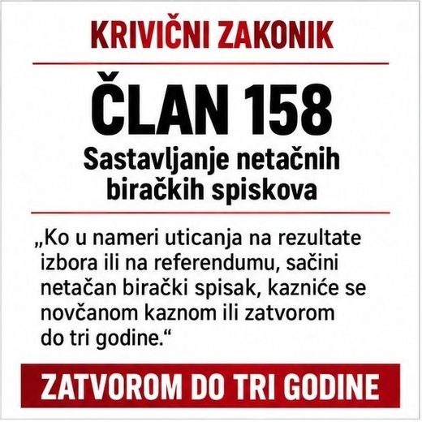

Savski venac · izbori 2026
Komšije proveravaju da li broj birača upisanih na adrese u opštini odgovara tome ko na njima zaista živi. Ova strana objašnjava šta zakon kaže i gde je granica te provere.
← Nazad na listu adresaBirački spisak je javna isprava. Svako ima pravo da izvrši uvid u njega i da traži ispravku onoga što u njemu nije tačno. Upravo to radimo — ništa više od toga.
Broj birača upisanih na svaku adresu je javno dostupan podatak. Kada se on uporedi sa brojem stanova na toj adresi, poneki odnos deluje neobično. To samo po sebi ne dokazuje ništa: jedan kućni broj često pokriva više ulaza, zgrada može imati dvorišne objekte, a ustanove zakonito imaju upisane ljude na svojoj adresi. Zato pitamo ljude koji tu žive — oni znaju ono što tabela ne može da pokaže.
Kroz taj postupak veći deo adresa sa liste dobije uredno objašnjenje, i to je jednako važan rezultat kao i onaj drugi.
Materijali koje komšije dele po sanducićima i na mrežama. Kliknite na sliku za uvećanje.







QR kod sa materijala vodi na upit.birackispisak.gov.rs, zvanični portal Ministarstva državne uprave i lokalne samouprave za uvid u jedinstveni birački spisak.
Birač se upisuje u birački spisak prema mestu prebivališta, s tim što se na zahtev birača, u
birački spisak može upisati i njegovo boravište u zemlji.
Izuzetno od stava 1. ovog člana, birač koji je upisan u birački spisak i koji prijavi
prebivalište u drugoj jedinici lokalne samouprave, odnosno u drugoj gradskoj opštini, upisuje se u
deo biračkog spiska prema mestu tog prebivališta nakon šest meseci od dana prijave prebivališta.
Ovo pravilo postoji upravo zato da prijava prebivališta neposredno pred izbore ne bi menjala sastav biračkog tela u nekoj opštini.
Zakon o jedinstvenom biračkom spisku — član 6, stav 2.Spisak se vodi po službenoj dužnosti, što znači da za njegovu tačnost odgovara organ koji ga vodi, a ne građani.
Zakon o jedinstvenom biračkom spisku — član 1.Uvid u birački spisak vrši se preko jedinstvenog matičnog broja i broja lične karte. Zahtev za upis, brisanje, izmenu, dopunu ili ispravku podnosi se opštinskoj, odnosno gradskoj upravi po mestu prebivališta. Rokovi su vezani za zaključenje biračkog spiska pre dana izbora, pa ih pre podnošenja proverite kod nadležne uprave.
Zakon o jedinstvenom biračkom spisku — članovi 12. i 14.Službeno lice koje u službenu ispravu, knjigu ili spis unese neistinite podatke, ne unese važan podatak ili svojim potpisom, odnosno pečatom overi službenu ispravu sa neistinitim sadržajem, kazniće se zatvorom od tri meseca do pet godina.
Krivični zakonik — član 357.Ko dovođenjem u zabludu navede nadležni organ da u javnoj ispravi, zapisniku ili knjizi overi
štogod neistinito što može da služi kao dokaz u pravnom saobraćaju, kazniće se zatvorom od tri
meseca do pet godina.
Za razliku od člana 357, koji se odnosi na službeno lice, ova odredba pogađa onoga ko organ dovede u zabludu.
Krivični zakonik — član 358.Ko u nameri uticanja na rezultate izbora ili na referendumu, sačini netačan birački spisak,
kazniće se novčanom kaznom ili zatvorom do tri godine.
Posebno je kažnjivo i glasanje umesto drugog lica ili višestruko glasanje na istom glasanju (član 157).
Krivični zakonik — članovi 157. i 158.Kada se utvrdi da neko ne stanuje na adresi na kojoj ima prijavljeno prebivalište, nadležni organ rešenjem pasivizira tu adresu, a to lice je dužno da u roku od osam dana prijavi adresu na kojoj stvarno stanuje. To je upravna mera, a ne kazna.
Zakon o prebivalištu i boravištu građana — član 18.Ova provera ima pravila kojih se držimo: